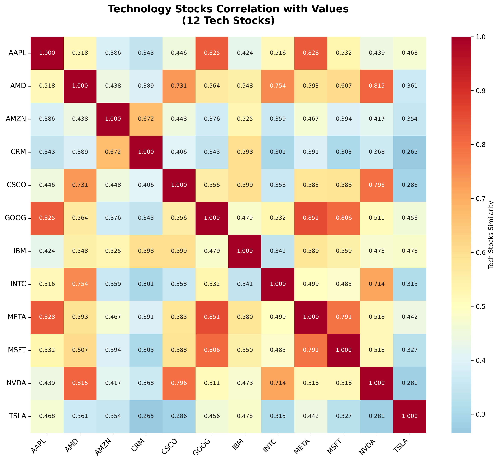
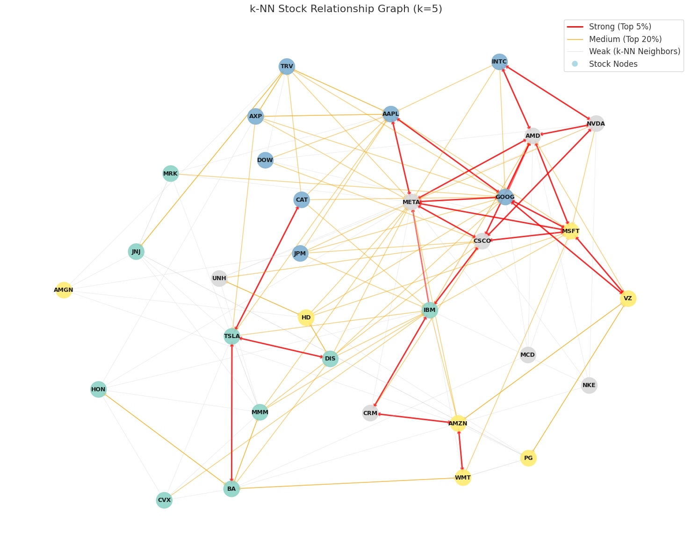
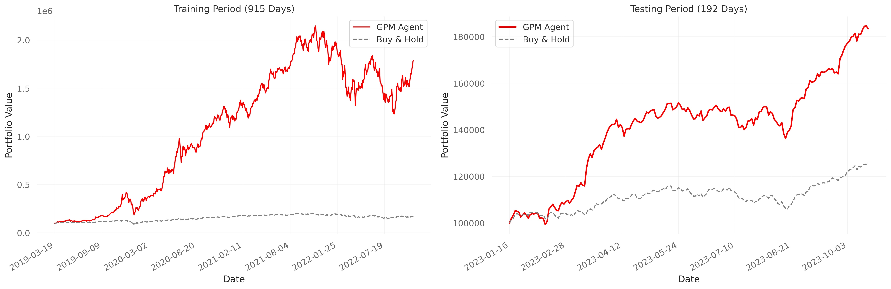
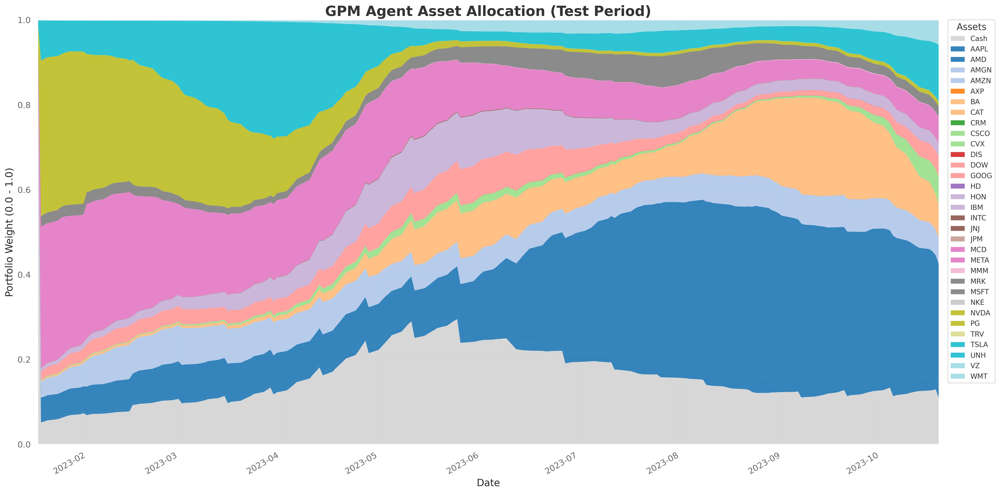

在傳統強化學習交易中，模型往往忽略了公司之間的隱性關聯（如供應鏈、競爭關係）。本專案提出了一種結合 檢索增強生成 (RAG) 與 大語言模型 (LLM) 的方法，從海量財報中自動提取公司關係，建構金融知識圖譜，作為後續強化學習 (RL) 交易模型的環境基礎。
1. 知識圖譜架構流程圖

2. 實作步驟詳解
步驟一：非結構化資料向量化 (Vectorization)
首先，針對目標投資池中的公司（如 S&P 500 成分股或科技股），收集其最新的年度財務報告（10-K）或法說會逐字稿。
- 資料清洗：去除財報中的免責聲明、表格雜訊。
- 文本切塊 (Chunking)：將長文本切分為適合 Embedding 模型處理的段落。
- 向量資料庫：將處理後的文本嵌入並存入 FAISS 向量資料庫。
步驟二：檢索增強 (RAG Retrieval)
為了避免文本太長容易導致 LLM 產生幻覺，我採用 RAG 來濃縮文本。
Query 設定：針對每一家公司，查詢主要產品、供應鏈、競爭關係等關鍵字。
Top-k 召回：從向量資料庫中檢索出與查詢 相關度最高的 5 份 (Top-5) 文本片段。這些片段通常包含了具體的業務合作、供應鏈依賴或市場競爭描述。
步驟三：LLM 關係推理 (LLM Reasoning)
將檢索到的 Top-5 文本片段作為 Context，餵給 LLM 進行推理。
Prompt 設計：要求 LLM 扮演金融分析師，分析文本並提取三元組
(Head, Relation, Tail)。實體對齊：確保提取的公司名稱標準化（例如將 “TSMC”, “Taiwan Semiconductor” 統一為節點
TSMC）。
Prompt 範例：
“基於以下提供的財報片段，分析公司 A 在產品、供應鏈、競爭對手的公司實體，並生成h r t。
步驟四: 將知識圖譜轉成Embedding
為了量化公司之間的關係強度，我使用 PyKEEN 對上述圖譜進行訓練。
- 模型選擇：採用MuRe模型。
- 輸出結果：每家公司被映射為一個固定維度的向量 (Entity Embedding)。

步驟五: k-NN 圖譜分層
直接使用全連接圖會引入過多雜訊，因此我計算 Embedding 之間的餘弦相似度 (Cosine Similarity)，並採用 k-近鄰演算法 (k-NN) 進行稀疏化：
- 相似度矩陣：計算所有公司向量的兩兩相似度。
- Top-k 篩選：對每個節點，僅保留相似度最高的 k 個鄰居 (k = 5)，確保圖的稀疏性與運算效率。
- 邊屬性定義 (Edge Typing)：
- Strong Edge (Top 5%)：視為強依賴關係，賦予最高權重。
- Medium Edge (Top 20%)：視為板塊內連動。
- Weak Edge：視為潛在關聯。

步驟六: 圖強化學習
最後，將 步驟五 建構的「靜態圖結構」與 Yahoo Finance 下載的「動態股價特徵」結合，輸入至 GPM (Geometric Portfolio Manager) 模型中。
- 圖結構 (Graph Structure)：提供基本面邏輯。
- 節點特徵 (Node Features)：提供市場時序訊號（Open/High/Low/Close）。
- 優勢：RL Agent 能在股價尚未反應時，透過圖結構感知資訊傳遞。


4. 總結 (Conclusion)
利用 RAG + LLM 自動建構圖譜，大幅降低了人工標註的成本，並能捕捉到傳統量化模型忽略的非線性關係。下一步將著重於優化 Prompt 的精準度以及引入時序動態圖 (Temporal Graph)。